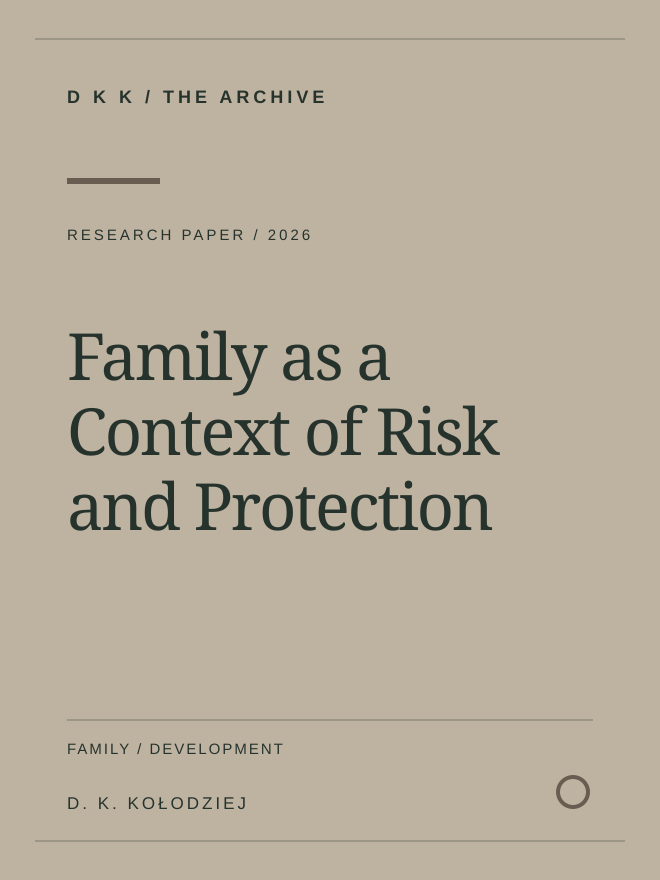
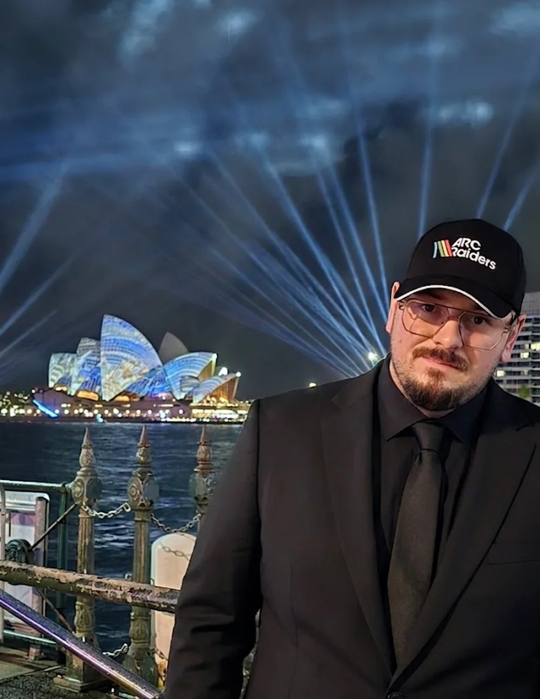
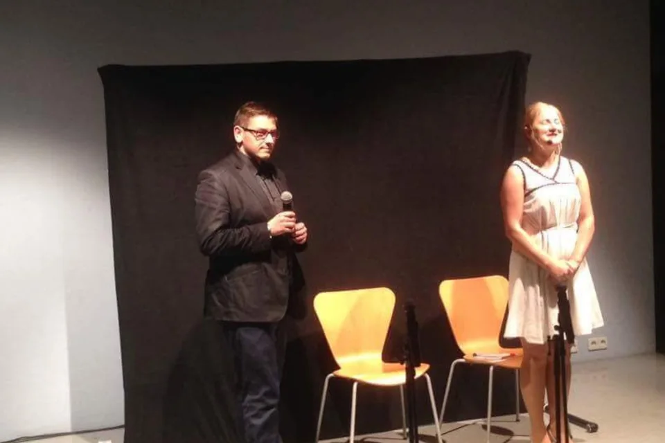
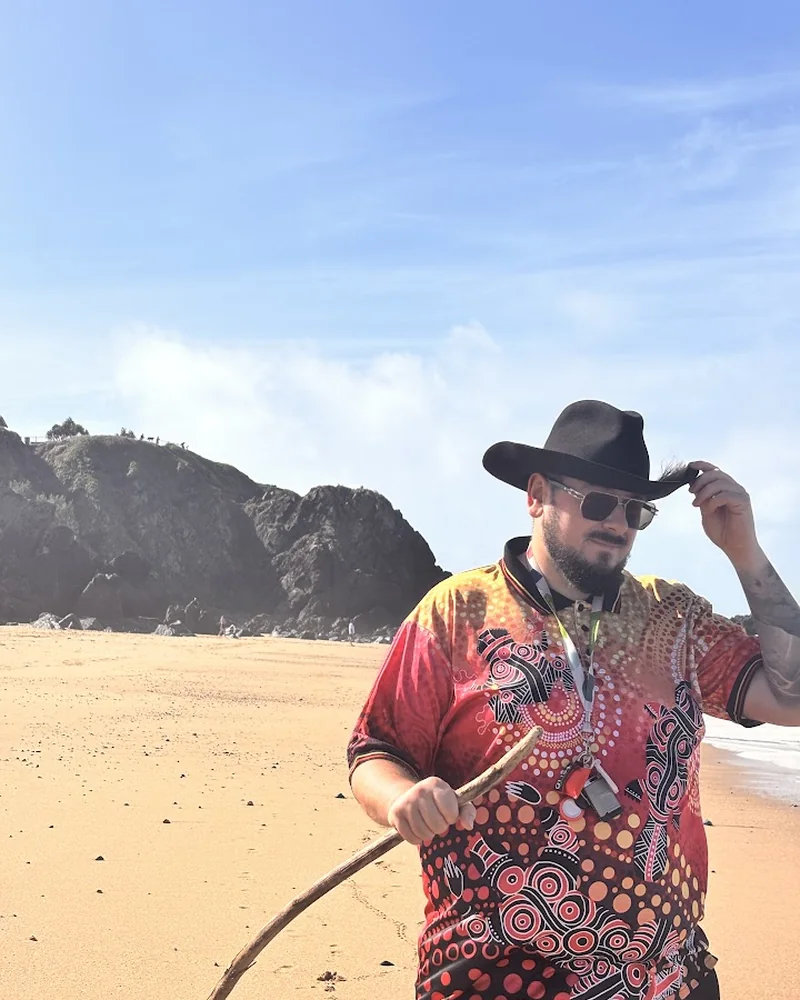

Towarzystwo Psychopedagogiczne
Leadership, interdisciplinary collaboration and psychological education.
PSYCHOTHERAPY · WRITING · EDUCATION
I work in mental health, write about psychology and education, and build initiatives for professional learning. This is where I share that work.
Explore the work↗
01 — SELECTED WORK
001 / 008Research articles, working papers, books and educational projects. Different formats, grounded in questions from practice.

Reframing assessment around functioning, education and practical support

Diagnostic reasoning, interpretation and professional judgement

Family processes and a multifactorial view of adolescent development

02 — ABOUT ME
Psychotherapist, mental health clinician, counsellor and author.
My professional work began in Poland in 2013. Since then, I have worked with young people, adults and families in counselling, psychotherapy and psychosocial support. Today, my clinical work is based in Queensland, Australia.
At headspace Mackay, I support young people experiencing mental health difficulties. Alongside practice, I write about psychological assessment, adolescent development, families and education. I am a PACFA Clinical Registrant and contribute to professional education and organisational leadership through ICI, PCA and TPP.
Explore my professional profile↗03 — A WAY OF THINKING
Knowledge matters when
it informs practice.
05 — EXPERIENCE
005 / 008Early work in counselling, psychological and educational support.
Beginning of leadership at Towarzystwo Psychopedagogiczne.
Work with young people in community mental health and counselling services.
An expanding catalogue of publications and continuing professional development.
06 — INITIATIVES
006 / 008A few of the organisations and initiatives connected to this story.
Leadership, interdisciplinary collaboration and psychological education.
A publication space for ideas about psychology, education and contemporary life.
Learning resources and initiatives designed to bring practical knowledge closer to people.
07 — PROFESSIONAL & RESEARCH IDENTITY
THE PERSON / THE WORKMy work combines mental health practice, writing, professional education and organisational leadership. These are connected areas of responsibility, not separate identities.
Senior Mental Health Clinician at headspace Mackay, with experience in psychotherapy and psychosocial support since 2013.
PACFA · Clinical RegistrantPresident of Towarzystwo Psychopedagogiczne (TPP) since 2015; Chief Executive Officer of the Psychological Counselling Association (PCA).
BASED IN QUEENSLANDAcademic Director at the International Counselling Institute. Two completed master's degrees, a bachelor's degree, and current Doctor of Business Administration (DBA) studies.
DBA STUDIES IN PROGRESS

RESEARCH IDENTIFIERS & PROFILES
Read published and deposited work, explore the professional record, or get in touch.
07 — THE LIBRARY
007 / 008Browse current articles, research papers, working papers and books. Each publication has its own page and source links.
Reframing assessment around functioning, education and practical support
Diagnostic reasoning, interpretation and professional judgement
Family processes and a multifactorial view of adolescent development
08 — CONTACT
For professional enquiries, writing, educational projects and potential collaboration, please use the contact details below.
Get in touch